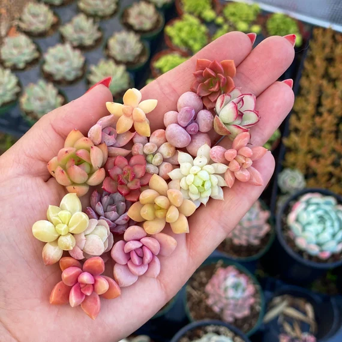

Types of Plants

There are many different types of plants and many different uses for plants. Sometimes you put plants in your backyard or even your frontyard. You can grow trees for hundreds of years that will soon become massive giants in your neighborhood. You can also grow little bushes and other small plants. Some plants you can put inside. These are great to brighten up and bring life into your home. They also have many mental health benefits as well.
Succulents
Succulents are a great starting plant for beginners because they require very little water and don't need much care other than light. They also can grow in many differents ways and they survive for many years without needing to be replaced. You can also easily propogate them to have more without having to pay for more plants.
There are many different types of succulents. Some of these types grow like bonsi trees, some grow like like strings of pearls, some grow like rosets. They come in many different shapes and sizes and good be customized for a home.